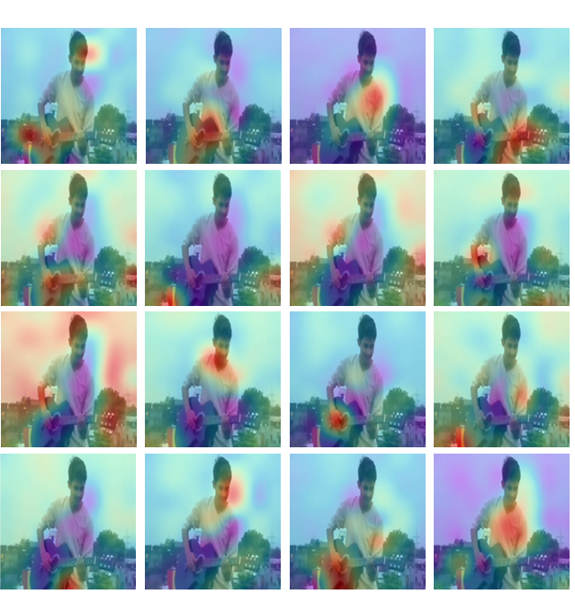
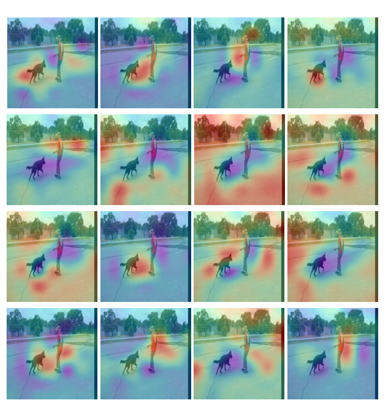
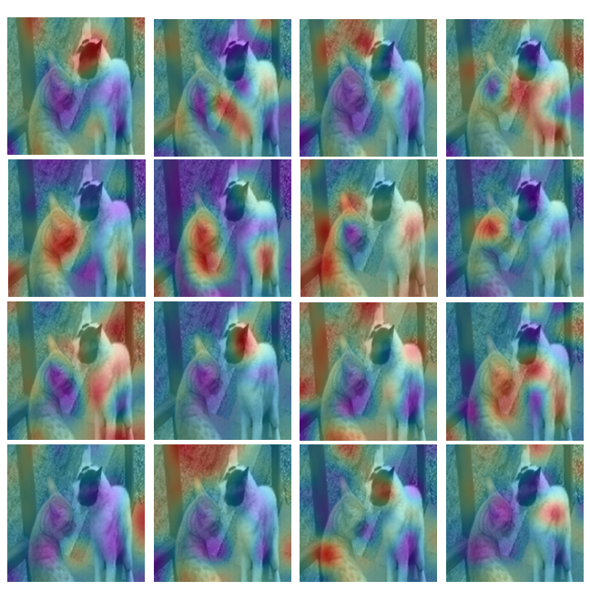
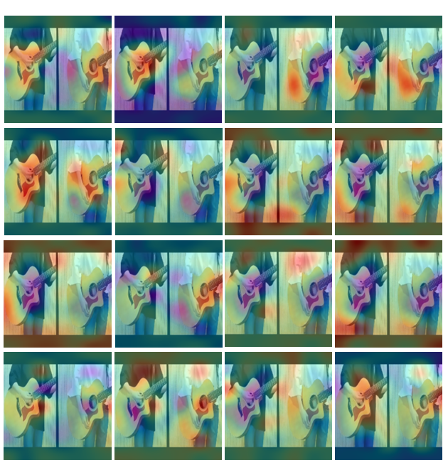
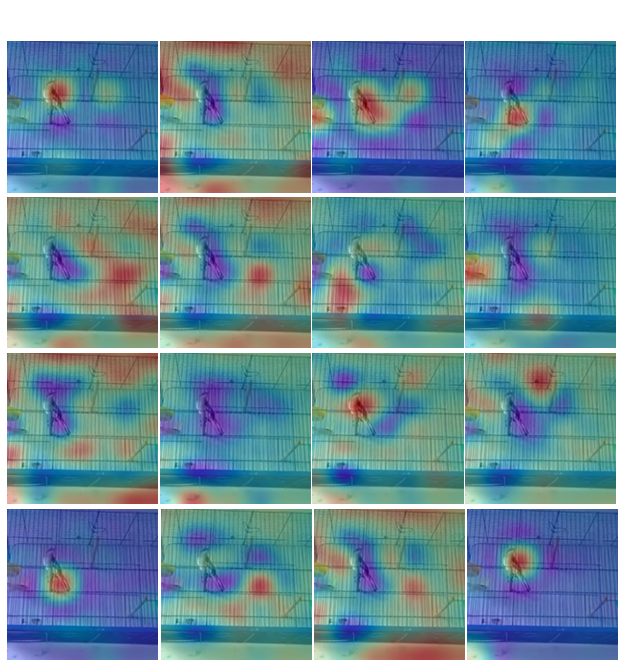

Recently, transformer-based models have demonstrated remarkable performance on audio-visual segmentation (AVS) tasks. However, their expensive computational cost makes real-time inference impractical. By characterizing attention maps of the network, we identify two key obstacles in AVS models: 1) attention dissipation, corresponding to the over-concentrated attention weights by Softmax within restricted frames, and 2) inefficient, burdensome transformer decoder, caused by narrow focus patterns in early stages. In this paper, we introduce AVESFormer, the first real-time Audio-Visual Efficient Segmentation transformer that achieves fast, efficient and light-weight simultaneously. Our model leverages an efficient prompt query generator to correct the behaviour of cross-attention. Additionally, we propose ELF decoder to bring greater efficiency by facilitating convolutions suitable for local features to reduce computational burdens. Extensive experiments demonstrate that our AVESFormer significantly enhances model performance, achieving 79.9% on S4, 57.9% on MS3 and 31.2% on AVSS, outperforming previous state-of-the-art and achieving an excellent trade-off between performance and speed. Code is available in supplementary material.
The heatmap generated by each audio tokens.
(a)
    